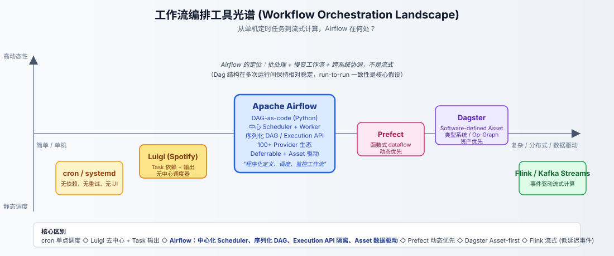
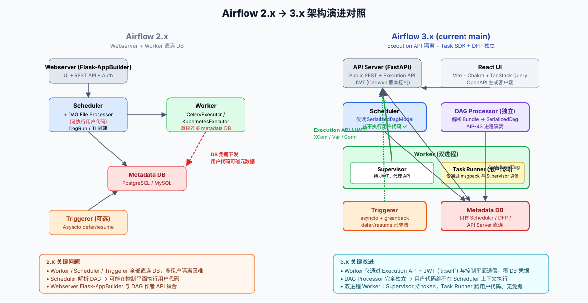
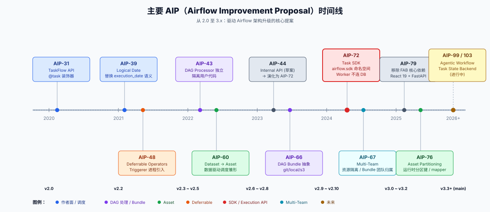
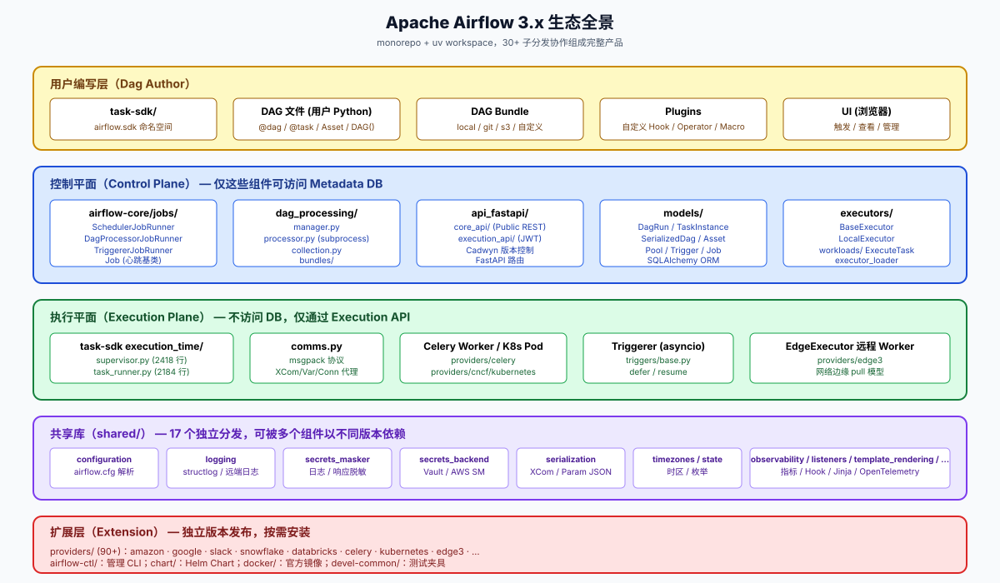

00 · 概述：Airflow 解决了什么，又为何长成今天这副样子
本篇是整套源码分析的总纲。我们先回到 Airflow 立项之初要回答的工程问题，然后说明 Airflow 在工作流编排光谱中的独特定位，再剖析 2.x → 3.x 大幅重构背后的几个核心 AIP（Airflow Improvement Proposal）。读完本篇，您将清楚后续每一章为什么需要存在。
0.1 起点：批处理工作流编排的本质问题
数据工程团队几乎都遇到过同一个问题：业务方需要一组"按时跑、有依赖、能重试、出错有人知道"的离线任务。最早一代用 cron 加 shell 拼凑：
0 2 * * * /opt/etl/extract.sh && /opt/etl/transform.sh && /opt/etl/load.sh- 出错没人告警，重跑要手动；
- 任务依赖靠脚本顺序写死，加一个分支就要改 cron；
- 没有可视化，谁也说不清当前哪条流程在跑。
这套做法在任务数到达两位数时就会崩坏。后来出现了 Luigi（Spotify）和 Pinball（Pinterest）等工具，它们引入了"任务依赖图"和"任务输出（Target）"的概念，但仍然偏向单机、缺少调度集群、UI 简陋。Airbnb 在 2014 年开源 Airflow 的核心动机正是要在这种背景下给出一个"程序化、可调度、可观测、可扩展"的工作流编排平台。Airflow README.md 中的定义直截了当：
Apache Airflow (or simply Airflow) is a platform to programmatically author, schedule, and monitor workflows. When workflows are defined as code, they become more maintainable, versionable, testable, and collaborative.
把这句话拆开看，里面藏着 Airflow 的全部基因：
- Programmatically author — 工作流用 Python 代码写，而不是 YAML / GUI；可以版本控制、可以单元测试、可以用任何抽象（循环、参数化、动态生成）。
- Schedule — 内置中央调度器，根据
schedule（cron 或自定义 timetable）触发执行，并管理"什么时候该跑、跑哪一份历史数据"。 - Monitor — 内置 Web UI 展示运行状态、日志、依赖图、运行时长、失败原因。
这就把"调度 + 执行 + 可观测"打包成一个产品。配合"程序化定义"的核心理念，Airflow 在数据工程领域成为事实标准。
0.1.1 Airflow 的目标场景与边界
Airflow 官方文档 airflow-core/docs/core-concepts/overview.rst 明确指出：
Airflow targets mostly static and slowly changing workflows.
这是一个常被忽视的边界。Airflow 假设工作流的拓扑结构在多次运行之间相对稳定——任务 A 永远跑在任务 B 之前，Dag 在每天 02:00 触发的"形状"几乎一样。在这种假设下，提前序列化 Dag、提前在 UI 渲染依赖图、提前为每个 TaskInstance 写入数据库才合理。如果业务真正需要的是"事件驱动、毫秒级、任务图每次都不同"的流式计算，那应当使用 Flink / Kafka Streams / Spark Streaming，而不是 Airflow。
下图把 Airflow 放回它的同行光谱里：

- 左端：cron / systemd timer — 单点、零依赖、零重试。
- 中左：Luigi — 任务依赖 + 输出文件作为状态，去中心化，但缺少调度器和 UI。
- 中央：Airflow — DAG-as-code、中心化 Scheduler、序列化 DAG、Execution API、Provider 生态。
- 中右：Prefect — 函数式 dataflow、强调"流" 与"任务"统一抽象，动态优先。
- 右中：Dagster — Software-defined Asset 思路从一开始就把"数据资产"作为一等公民。
- 右端：Flink / Kafka Streams — 流式、事件驱动、低延迟，工作流定义和编排策略截然不同。
把 Airflow 称为"批处理工作流编排"是准确的；称它为"调度器"则过于狭窄——调度只是它三大职责之一。
0.2 核心理念之一：DAG-as-code
Airflow 选择把工作流写成 Python 代码而不是 YAML / DSL，有三重价值：
- 可组合性：循环、条件、函数、类、模块——Python 能做到的，Airflow 的 Dag 全部都能做。
- 可版本化、可测试：Dag 文件就是普通的
.py，可以pytest，可以git diff，可以 Code Review。 - 可动态生成：很多业务场景下需要"按某张配置表生成 100 个相似 Dag"，纯文本 YAML 做不到，Python 一行
for就能。
举个最小可运行的例子（用 Airflow 3.x 的 TaskFlow API，AIP-31）：
from airflow.sdk import dag, task
from datetime import datetime
@dag(schedule="0 2 * * *", start_date=datetime(2026, 1, 1), catchup=False)
def daily_etl():
@task
def extract() -> dict:
return {"rows": [1, 2, 3]}
@task
def transform(payload: dict) -> int:
return sum(payload["rows"])
@task
def load(total: int) -> None:
print(f"loaded total={total}")
load(transform(extract()))
daily_etl()
几行代码里就交织了所有 Airflow 概念：
@dag是 Dag 装饰器，把这个函数注册为一个 Dag；schedule="0 2 * * *"是 cron 表达式。@task把普通函数升格为 Operator；返回值会自动放入 XCom，下游可直接接收。load(transform(extract()))这条语句不会真的调用三个函数，而是建立任务依赖关系图（这是 TaskFlow API 的魔法，依赖通过参数传递隐式建立）。airflow.sdk是 Airflow 3.x 引入的公共 SDK 命名空间（AIP-72），独立于airflow-core内部模块。
这种"看着像普通 Python，跑起来构造一个 DAG"的写法，正是 Airflow 区别于其他工具最显著的认知优势。
0.3 三原则：Dynamic / Extensible / Flexible
README.md:90-94 显式列出 Airflow 三条核心原则：
Dynamic: Airflow pipelines are configuration as code (Python), allowing for dynamic pipeline generation. Extensible: Easily define your own operators, executors and extend the library so it fits the level of abstraction that suits your environment. Flexible: Pipelines are parameterized, utilizing the powerful Jinja templating engine.
这三条不是口号，而是直接对应代码组织：
| 原则 | 对应能力 | 源码体现 |
|---|---|---|
| Dynamic | 动态生成 Dag、动态映射任务（dynamic task mapping） | task-sdk/src/airflow/sdk/definitions/decorators/、task-mapping 相关模块 |
| Extensible | 自定义 Operator / Hook / Executor / Auth Manager / Secrets Backend | providers/ 90+ 包，shared/secrets_backend/，多 Executor 路由 |
| Flexible | Jinja 模板渲染（{{ ds }}、{{ ti.xcom_pull(...) }}）、Param、Variable |
shared/template_rendering/、task-sdk/.../definitions/param.py |
我们将在第 5 篇（Task SDK）展开 Dynamic、第 10 篇（Provider）展开 Extensible、第 5 / 7 篇展开 Flexible。
0.4 与 Prefect / Dagster / Luigi 的差异
下表是一份偏工程视角的对比（不试图全面，仅强调 Airflow 的特异点）：
| 维度 | Airflow | Prefect 2.x/3.x | Dagster | Luigi |
|---|---|---|---|---|
| 工作流抽象 | DAG (任务图) | Flow + Task（函数式） | Job + Op-Graph + Asset | Task + Target |
| 一等公民 | Task（任务） | Flow / Task | Software-defined Asset | Target（输出文件） |
| 调度 | 中心 Scheduler 进程，cron / Timetable | API 服务器轮询 / 推送 | Daemon + Sensor | 去中心，靠外部触发 |
| 用户代码隔离 | DFP 独立解析，Scheduler 不执行用户代码 | Flow 在执行时编译 | Op 在 daemon 编排，op 函数在 worker 跑 | 单机执行 |
| 数据资产 | Asset（AIP-60、AIP-76），可作为调度触发 | 不主推 | Asset 优先 | Target 类似但缺少血缘 |
| 长等待操作 | Deferrable Operator + Triggerer，事件驱动 | await 语义 |
Sensor | 阻塞执行 |
| 多租户 | Multi-Team（AIP-67，Bundle 归属） | 工作池 / 工作队列 | Code Location | 不支持 |
| Provider 生态 | 90+ 独立包 | 较少集成包 | 集成多但偏官方 | 极少 |
| 部署形态 | Local / Docker / Celery / Kubernetes / Edge | Cloud 主推、Self-host 可 | OSS + Cloud | Self-host |
最关键的几条差异：
- Airflow 把"任务"作为一等公民，Dagster 把"资产"作为一等公民。Airflow 在 AIP-60 后引入 Asset，但 Asset 是任务的"产物"，而不是"工作流的中心"。Dagster 反过来——Asset 先于 Job 存在，Op 是为 Asset 服务的。两条路径各有取舍：Airflow 的方式对存量"过程式 ETL"友好；Dagster 的方式对"数据血缘 + 数据契约"导向友好。
- Airflow 是唯一明确把"长等待"独立成进程的。这就是 Triggerer（AIP-48）：成千上万个传感器或定时器，如果占着 worker slot，资源浪费极大。Airflow 把它们抽出来用 asyncio 跑。Prefect / Dagster 的 sensor 也是异步的，但抽象层级不同。
- Airflow 的 Provider 生态是最大的优势。90+ 独立版本号的包（amazon、google、databricks、snowflake、slack 等等）使得集成市面上几乎任何系统都"开箱即用"。
0.5 Airflow 2.x → 3.x 架构演进
Airflow 3.0 于 2025 年 4 月发布，是自 1.x → 2.x 之后最大的一次架构变化。其根本驱动力是安全隔离与多租户。下图对比两个版本：

差异要点（每一条都对应后续章节）：
0.5.1 Webserver → API Server
- 2.x：Webserver 由 Flask-AppBuilder 实现，承担 UI 渲染 + REST API + 认证。
- 3.x：API Server 由 FastAPI 实现，分为 Public REST API（UI 和外部客户端用）和 Execution API（Worker / Triggerer / DFP 用）。
- UI 完全前后端分离：React 19 + Vite + Chakra UI + TanStack Query，OpenAPI 自动生成 TypeScript 客户端。
- 详见第 7 篇
07-execution-api.md。
0.5.2 Scheduler 不再执行用户代码
- 2.x：Scheduler 在内部启动 DAG File Processor 子进程，但它们共享配置、共享 DB 连接，逻辑上仍有耦合。
- 3.x：DAG Processor 完全独立进程（甚至独立部署，AIP-43），Scheduler 只读取
SerializedDagModel表中的 JSON 表示；用户 Python 代码绝不会在 Scheduler 上下文中 import、import 失败也不会让 Scheduler 崩溃。 - 详见第 2 篇
02-dag-processing.md和第 3 篇03-scheduler.md。
0.5.3 Worker 不再连接元数据库
- 2.x：CeleryExecutor、KubernetesExecutor 启动的 worker 进程持有数据库凭据，可以直接
SELECT * FROM task_instance或UPDATE task_instance SET state=...。如果用户代码恶意（或仅仅是写错），可以污染整个系统。 - 3.x：Worker 通过 Execution API + JWT 与 API Server 通信。每个 TaskInstance 启动时，Scheduler 下发的 JWT 仅作用于这一个 TI（claim
sub = task_instance_id，scopeti:self）；API Server 校验 JWT 后才允许 XCom / Variable / Connection 读写。 - 进一步，Worker 内部还分为 Supervisor（持 JWT）+ Task Runner（用户代码，无 JWT）。两者通过
comms.py中定义的二进制 msgpack 协议在本机管道通信。即使用户代码os.environ也读不到 JWT。 - 详见第 5 篇
05-task-sdk-runtime.md和第 7 篇07-execution-api.md。
0.5.4 DAG Bundle 抽象（AIP-66）
- 2.x：Dag 文件存储位置由
dags_folder配置决定，单点单路径。 - 3.x：Bundle 是 Dag 文件的逻辑容器。可以是本地路径、Git 仓库（自动 pull / checkout 不同分支）、S3、自定义实现。每个 Bundle 有自己的版本号、刷新策略。
- 与 Multi-Team（AIP-67）配合：不同团队拥有不同 Bundle，调度时按 Bundle 隔离资源。
- 详见第 2 篇。
0.5.5 Asset 取代 Dataset（AIP-60 → AIP-76）
- 2.4 引入 Dataset，作为数据驱动调度的初步实现。
- 3.x 把 Dataset 重命名为 Asset，并扩展出
AssetAlias、AssetWatcher、运行时分区（AIP-76）、AssetDagRunQueue表。 - 详见第 8 篇
08-asset-scheduling.md。
0.6 主要 AIP 速览
下图按时间排列了 Airflow 2.0 至 3.x 期间最重要的几个 AIP：

逐一展开说明每个 AIP 的"动机—成果"：
AIP-31 — TaskFlow API（2.0，2020）
动机：传统 Airflow 写 Dag 要先 from airflow.operators.python import PythonOperator，再用 PythonOperator(task_id="x", python_callable=fn, op_kwargs={...})，依赖关系用 >> 写，啰嗦。
成果：@dag / @task 装饰器；返回值通过 XCom 自动传递；调用即建立依赖（load(transform(extract()))）。代码长度通常缩减 40~60%。源码：task-sdk/src/airflow/sdk/definitions/decorators/。
AIP-39 — Logical Date（2.2，2021）
动机：早期的 execution_date 既表示"这次跑的逻辑时间窗口"，又被当成"实际触发时间"，语义混淆。
成果：把"逻辑时间"称为 logical_date，"实际开始时间"称为 data_interval_start / data_interval_end，"调度触发时间"称为 run_after。Timetable 接口（airflow.timetables.*）允许自定义"何时算一次新运行"。
AIP-43 — DAG Processor 独立化（2.3+，2022）
动机：Scheduler 进程内执行 Dag 解析，意味着用户的 import xxx 失败、循环 import、长耗时 import 都会拖垮调度器。
成果：DAG Processor 作为独立进程，可以在与 Scheduler 不同的机器上运行，甚至面向多团队部署多个 DFP。源码：airflow-core/src/airflow/dag_processing/manager.py、processor.py、airflow-core/src/airflow/jobs/dag_processor_job_runner.py。
AIP-48 — Deferrable Operators（2.2，2021）
动机：传感器（Sensor）要等外部条件——比如某张表是否到达、某个文件是否生成。早期 Sensor 是 worker 上一个进程一直阻塞，几千个 Sensor 就要几千个 worker slot，浪费极大。
成果：Operator 可以抛出 TaskDeferred 异常，把一个 Trigger 对象交给 Triggerer 进程；Triggerer 用 asyncio 在一个进程内同时托管几百上千个 Trigger；事件到达后再恢复 TaskInstance。源码：airflow-core/src/airflow/jobs/triggerer_job_runner.py、airflow-core/src/airflow/triggers/base.py、airflow-core/src/airflow/models/trigger.py。
AIP-44 → AIP-72 — Internal API / Task SDK（2.5 → 3.0）
动机：worker 与控制平面之间最初是直接共享 DB。AIP-44 试图引入"内部 RPC"层。经过几年迭代，最终演化为 Task SDK + Execution API 的二元结构。
成果：
- airflow.sdk 是公共 API 命名空间，DAG 作者只导入这个；与 airflow-core 内部完全解耦。
- Execution API 是 worker / triggerer / DFP 与控制平面之间唯一的接口，JWT 隔离。
- 这是 Airflow 3.x 最大的架构变化。
源码：task-sdk/、airflow-core/src/airflow/api_fastapi/execution_api/。
AIP-60 → AIP-76 — Asset 模型与分区资产（2.4 → 3.x）
动机：让"数据"成为调度的一等公民——上游任务"产出"某资产时，"消费"该资产的 Dag 自动触发，比传统 Sensor 更自然。
成果：
- AIP-60 引入 Dataset（后改名 Asset），增加 AssetEvent、AssetDagRunQueue 等表。
- AIP-76 引入分区资产——例如 customer_orders / partition=2026-05-24 才被视为一个具体资产，触发只需关心相关分区。
- 源码：airflow-core/src/airflow/models/asset.py、task-sdk/src/airflow/sdk/definitions/asset.py。
AIP-66 — DAG Bundles（2.10，2024）
动机：原本 dags_folder 只能指向一个目录。如果不同团队的 Dag 想分仓库管理、不同版本回滚、不同 Git 分支并存——做不到。
成果：Bundle 抽象，可以是本地、Git、S3、ZIP 等；每个 Bundle 有 version，DFP 可以并行管理多个 Bundle，调度时记录 TI 所属 Bundle 版本。源码：airflow-core/src/airflow/dag_processing/bundles/。
AIP-67 — Multi-Team（3.x）
动机：单个 Airflow 实例如何同时服务多个产品团队？Variables、Connections、Secrets、Bundle 都需要隔离。
成果：把 Bundle 归属到 Team，DAG 调度路由到该 Team 的资源池。注意 Airflow 的 Multi-Team 不是完全的多租户（不是 K8s 那种 namespace 隔离），而是逻辑级别的隔离。AIP-67 落地仍在持续推进，相关代码散落在 airflow-core/src/airflow/auth/ 和 airflow-core/src/airflow/models/。
AIP-79 — 移除 FAB 作为核心依赖（3.x）
动机：Flask-AppBuilder 是 Airflow 2.x 的 UI / Auth / RBAC 基础，但它是 Flask 2 体系下的产物，迭代缓慢，且把 UI 和后端高度耦合。
成果：FAB 移到可选 provider，核心 UI 改为 React + FastAPI；Auth 抽象出 AuthManager 接口（airflow-core/src/airflow/auth/managers/），FAB Auth 只是其中一种实现。
AIP-99 / AIP-103 — Agentic / Task State Backend（进行中）
动机：随着 LLM Agent 进入工作流（Anthropic / OpenAI 等供应商纷纷推出 MCP），Airflow 需要原生支持"长时间运行、多轮、可中断、可恢复"的任务。
成果：目前仍在 RFC 阶段，相关原型代码可在 task-sdk/src/airflow/sdk/definitions/ 与 providers/ 下看到。
0.7 整个生态怎么拼起来
下图把 Airflow main 分支当前的代码组织划成四个圈层：

- 用户编写层（黄）：DAG 作者只接触
airflow.sdk、Dag 文件、Bundle 配置、可选 Plugin、UI。这是 Airflow 的"公共契约"。 - 控制平面（蓝）：Scheduler / DFP / API Server / Models / Executor 五大件，能直接访问 metadata DB。CLAUDE.md 中明确写："Workers do not receive database credentials and genuinely cannot access the metadata database directly。"
- 执行平面（绿）：Worker、Triggerer、远程 Edge worker。不连 DB，仅通过 Execution API。
- 共享库（紫）：
shared/下 17 个独立分发，跨控制平面 / SDK / 执行平面共享，但每方可以独立升级。 - 扩展层（红）：
providers/90+ 独立版本号包，按需安装；chart/、docker/、airflow-ctl/、devel-common/各司其职。
uv workspace 把这些子分发组织成一个 monorepo，但每个子分发依然有自己的 pyproject.toml、自己的版本号、自己的发布周期。这就是 Airflow 在"巨型 monorepo"与"独立组件"两种诉求之间的工程化平衡。
0.8 后续章节如何展开
到此，您应当对 Airflow 的定位、设计哲学、版本演进有了完整的鸟瞰。下面 10 篇会按以下逻辑深入：
| 章节 | 您将学到 |
|---|---|
| 01 架构 | 9 大架构边界、5 类主进程、4 种部署形态、安全边界、HA 模型 |
| 02 DAG Processor | 从 Bundle 取文件 → 子进程解析 → 写 SerializedDagModel 的完整流水线 |
| 03 Scheduler | _do_scheduling 主循环、FOR UPDATE SKIP LOCKED HA 行锁、Pool slot 模型 |
| 04 Executor | BaseExecutor 抽象、LocalExecutor、CeleryExecutor、KubernetesExecutor 各自的派发流程 |
| 05 Task SDK + Worker | @task 装饰器原理、Supervisor / Task Runner 双进程、msgpack 协议 |
| 06 Triggerer | Asyncio + greenback 的事件循环结构、defer/resume 完整时序 |
| 07 Execution API | FastAPI + Cadwyn 版本控制、JWT ti:self 校验、自动续期 middleware |
| 08 Asset | Asset / AssetEvent / AssetDagRunQueue 三件套、资产驱动调度 |
| 09 模型 | 17 张核心表、关键索引、迁移演进、状态枚举 |
| 10 Provider | provider.yaml schema、entry points 发现、Hook / Operator / Executor 扩展点 |
读完这套文档，您应能在任意一个 Airflow 主进程崩溃日志、任意一段 scheduler 慢查询、任意一个 worker 报错时，知道"这是哪一层、应该看哪个文件、为什么是这样设计的"。
下一篇：01-architecture.md — 我们把 9 大架构边界逐条展开，画清楚物理部署图（K8s、Celery 两种形态），并梳理高可用模型。